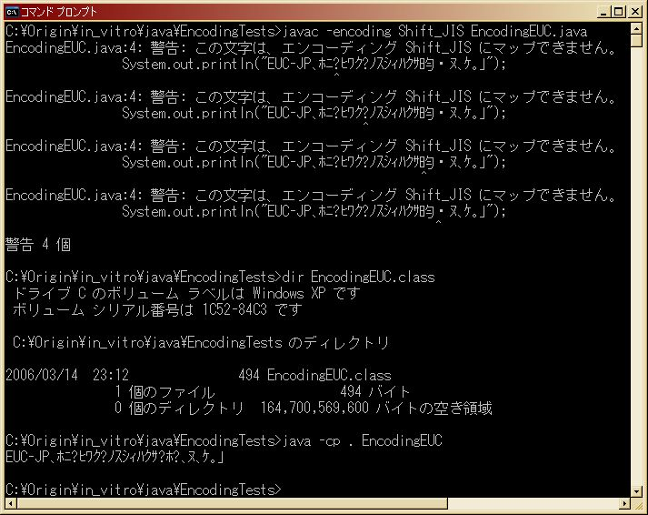
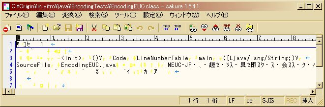

カテゴリ: Java
Javaソースコード中に埋め込まれた文字列が、実際にコンパイルされると内部で本当にUTF-8になるのか確認してみる。
プラットフォームはWindowsXP + JDK 1.5
重要：Javaクラスファイル中のUTF-8についての追加情報を本文末に追記したので、そちらも必ず参照のこと。
SJISで記述→コンパイル
EncodingSJIS.java:
public class EncodingSJIS {
public static void main(String[] args) {
System.out.println("ShiftJISの日本語表示文字列です。");
}
}
DOS> javac -encoding Shift_JIS EncodingSJIS.java DOS> java -cp . EncodingSJIS ShiftJISの日本語表示文字列です。
EUC-JPで記述→コンパイル
public class EncodingEUC {
public static void main(String[] args) {
System.out.println("EUC-JPの日本語表示文字列です。");
}
}
DOS> javac -encoding EUC-JP EncodingEUC.java DOS> java -cp . EncodingEUC EUC-JPの日本語表示文字列です。
クラスファイルの内部を見てみる。
拡張子を.txtにして（しなくとも良いが）、UTF-8に対応したエディタで文字コードをUTF-8で指定して開いてみる。
- EncodingSJIS.class
- EncodingEUC.class
いずれも、文字コードがUTF-8としてエディタに認識され(*1)、実際に日本語文字列が読み込めている。
推察と追試験
以上より、 -encoding オプションをコンパイル時に指定することによりプラットフォームのデフォルトでない文字コードでも、クラスファイルコンパイル時にUTF-8に変換されて内部表現されることが分かった。
では、あえて-encodingで間違ったエンコーディングを指示するとどうなるか？

上図のように、コンパイル時に文字コードの検出で警告が表示されるが、クラスファイルは生成される。また、実行すると文字化けしていることが分かる。
実際にクラスファイルをエディタで開いてみると、下図のようになり、エディタの文字コードの自動認識も失敗していることが分かる。

結論
- "-encoding" オプションによりソースコードの文字コードを明示してコンパイルできる。
- コンパイル時にUTF-8の内部表現に変換される。
- "-encoding" オプションで間違ったエンコーディングを指定した場合、文字コードで警告が出るがクラスファイルは生成される。ただし、内部表現では文字化けが発生する。
どうでもいいですが、文字コードとエンコーディングをもうちょっと意識して使い分けたいです。勉強しなくちゃ・・・。
Javaクラスファイル中のUTF-8について等
元々Javaクラスファイル中の文字列がUTF-8である、というのは、たまたまクラスファイルをsakuraエディタで開いてみた時、日本語部分がきちんと表示されたのがUTF-8で開いたときだったからと言う経験に基づいた推測にすぎなかった。
実際にJavaVM仕様書を見てみると、classファイル中での文字列はUTF-8で表現するよう記述されている。
この記事では最初からUTF-8であることが分かっていたような順番で書いてしまっているが、実際は先に経験上UTF-8で文字化けしないことが分かっており、その後仕様書で確認したところUTF-8で合っていた、という順序だった。
ただしUTF-8と表記されていても、classファイル中でのUTF-8は標準とは若干異なるエンコーディングになっている。
- JavaVM仕様書(第二版), "4.4.7 The CONSTANT_Utf8_info Structure"
There are two differences between this format and the "standard" UTF-8 format. First, the null byte (byte)0 is encoded using the 2-byte format rather than the 1-byte format, so that Java virtual machine UTF-8 strings never have embedded nulls. Second, only the 1-byte, 2-byte, and 3-byte formats are used. The Java virtual machine does not recognize the longer UTF-8 formats.
- Class (file format) - Wikipedia, the free encyclopedia
The Unicode strings, despite the moniker "UTF-8 string", are not actually encoded according to the Unicode standard, although it is similar. There are two differences (see UTF-8 for a complete discussion). The first is that the codepoint U+0000 is encoded as the two-byte sequence C0 80 (in hex) instead of the standard single-byte encoding 00. The second difference is that supplementary characters (those outside the BMP at U+10000 and above) are encoded using a surrogate-pair construction similar to UTF-16 rather than being directly encoded using UTF-8. In this case each of the two surrogates is encoded separately in UTF-8. For example U+1D11E is encoded as the 6-byte sequence ED A0 B4 ED B4 9E, rather than the correct 4-byte UTF-8 encoding of f0 9d 84 9e.
ポイントとしては 標準のUTF-8ではなくUTF-8によく似ているが若干異なるエンコーディングを行っている点。U+0000のNULL文字など、VMSpecの方に詳細なコードポイントの範囲と変換方式が載っている。
BMP(=UCS-2)の外のコードポイントについての記述がVMSpecとWikipediaとで異なる点が気になる。
VMSpecの方では
Second, only the 1-byte, 2-byte, and 3-byte formats are used.
The Java virtual machine does not recognize the longer UTF-8 formats.
として、単に「認識せず」としか書かれていない。
UTF-8で3バイトまでの範囲となると U+0000 から U+FFFF までになるので、UCS-4でのBMP(=UCS-2)の範囲になり、JavaVM内部ではUnicode(UCS-2)の文字集合が使われている、という話と一応矛盾はしないが、Wikipediaの記述とずれがある。
Wikipedia側の記述：
The second difference is that supplementary characters (those outside the BMP at U+10000 and
above) are encoded using a surrogate-pair construction similar to UTF-16 rather than
being directly encoded using UTF-8.
これについては、WebのVMSpecの方が記述が古くなっているのが原因らしい。WikipediaのReferenceにはJSR202へのリンクがあるが、これが Java Class File Formatの最新版となっている。
- "Java Specification Requests - detail JSR# 202"
こちらを確認したところ、
Characters with code points above U+FFFF (so-called supplementary characters)
are represented by separately encoding the two surrogate code units of their
UTF-16 representation.
としてU+10000以降のコードポイントの変換方法がきちんと掲載されている。Wikipediaの説明はこちらを参考にしていると思われる。
今回は「たまたま」通常のUTF-8と同じエンコードになる範囲の文字列だったため、sakuraエディタで開いて文字化けせずに済んだだけだったことが分かる。
http://java.sun.com/docs/books/jvms/second_edition/html/VMSpecTOC.doc.html
上記VMSpecのドキュメントは、Web上でJavaVMの仕様を確認できる便利なページではあるが、今回のようにJSRの方で更新されている部分もあるため注意が必要かもしれない。